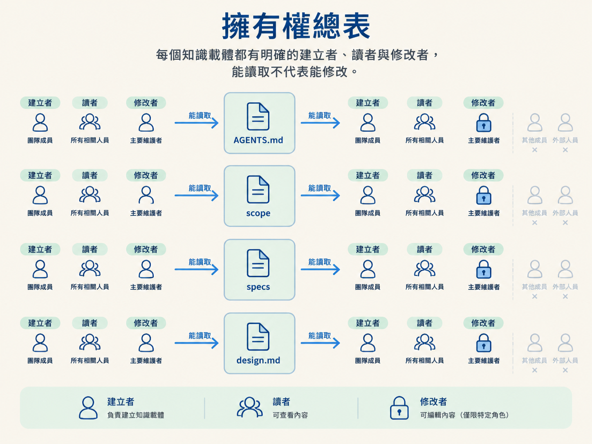
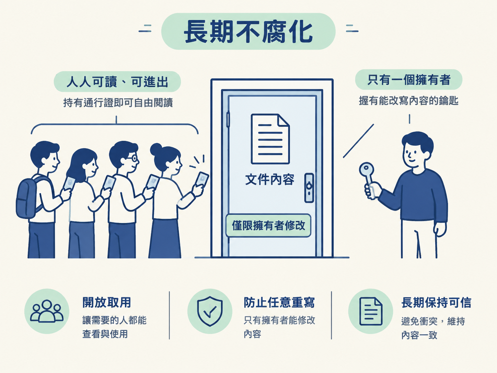

完成這一節後，你應該能說清楚每個知識載體由誰建立、誰讀取，以及誰有權修改；也能解釋為什麼「單一擁有者」和「外科手術式修改」能讓這些檔案長期維持可信。
你可能看過這種場景：專案的 AGENTS.md 寫著「縮排使用 tab」，但 .editorconfig 卻設定成 spaces；README 說部署要執行 npm run deploy，package.json 裡卻根本沒有這個 script。
文件會逐漸失去可信度，通常不是因為沒有人維護，而是因為太多人都能修改同一份內容。當每個人、每個工具都能直接改檔案，最後很容易留下兩份互相矛盾的真相，卻沒有人知道應該相信哪一份。
這套流程的解法，是先把擁有權固定下來：每個檔案都有明確的建立者、讀者，以及受到限制的修改者。接下來就把這張表攤開，看看每個角色能做什麼，以及這樣分工為什麼能讓文件多年後仍然可靠。
下表的每一列都是一個知識載體，分別說明誰建立它、誰讀取它，以及誰有權修改它。這三個角色刻意分開，因為能讀取不代表能修改。

| 檔案 | 建立者 | 讀者 | 修改者 |
|---|---|---|---|
AGENTS.md 與它的 CLAUDE.md 指標 | audit | 每一個 skill | sync |
docs/scope/ 裡的 scope | scope | architect、develop | develop 推進，scope 與 sync 對帳 |
docs/specs/ 裡的 specs | architect（外加 develop 可建的 Assumed 草稿） | develop | develop 推進狀態列；architect 掌管全部內容、追認並清除 Assumed、標記取代；sync 標記過期與未追認 |
design.md 與它指向的 CSS 數值 | develop | develop、check | develop |
除了表中的四種載體，其他內容也各有自己的主人：
docs/reviews/，由 check 負責。CHANGELOG.md、docs/releases/ 與 docs/postmortems/，由 document 負責。第一條紀律是：每個檔案只能由一個 skill 修改內容。
例如，spec 的內容只能由 architect 撰寫；develop 只能修改狀態那一行。這就是上一節提到的規則，也是「單一擁有者」的具體做法。scope 由 scope 建立、由 develop 推進，再由 scope 與 sync 對帳；每個技能都只能在自己的邊界內工作，不會越界改動別人的檔案。
這樣分工的實際好處是可追溯。當你看到某份檔案被修改時，可以合理地知道是哪個角色動了它，也知道它應該遵循哪套規則。可預測性，正是可信度的來源。
第二條紀律是：修改要小而準，像外科手術一樣只處理需要處理的地方。
負責對帳的 sync 只做兩件事：加入新的行，以及修正它擁有的行。它不會重寫你的敘述，也不會順手整理整份文件。
這種做法讓 sync 能保持冪等。也就是說，同一份變更即使再執行第二次，也不會多改一個字；因為第一次執行時，該補的已經補上、該修的也已經修好。
檔案要長期可信，還需要避免重複的真相來源。持久的專案情境應該放在與工具無關的 AGENTS.md；CLAUDE.md 永遠只是一份指向它的薄指標。如此一來，就不會發生「兩份文件都要更新，結果只更新其中一份」的問題。
把擁有權固定下來，會帶來三個實際結果。
每個階段交接時，你可以清掉對話內容。下一個 skill 不需要猜測前一個階段做了什麼，而是直接從檔案讀取正確狀態。
隊友 pull 下來後，看到的是與你相同的知識。大家依照同一批檔案工作，不會因為各自保留一套記憶，而逐漸形成不同版本的規則。
檔案只會由它應該負責的角色修改，因此不容易慢慢累積互相衝突的內容。擁有權就像文件的門禁系統：不是禁止所有人閱讀，而是避免任何人都能隨意重寫。

每個載體都有固定的建立者、讀者與修改者：AGENTS.md由 audit 建立、所有 skill 讀取、sync 維護；scope 由 scope 建立、develop 推進；specs 由 architect 掌管內容，develop 只推進狀態；design.md由 develop 負責。兩條紀律撐起這張表：單一擁有者，以及外科手術式修改。再加上AGENTS.md是唯一真實來源、CLAUDE.md只是指標，檔案才不會隨時間崩壞。
當檔案、狀態與主人都已經分清楚，下一個問題就是：怎麼確保一個需求不會在流程中被漏掉，或被不同角色解讀成不同意思？答案是一條從規格一路連到測試的線：acceptance criteria。